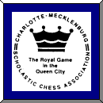

Stanly County Chess
Local clubs and tournaments
Find out how you rate. Play in USCF tournaments.
Examples
of USCF tournament games.
- Hayes-Lowder
- Lowder-Keller
- Daniel-Lowder
- Lowder-Michael
- O'Bryant-Lowder
- Smith-Lowder
- Lowder-Hauser
- Vicary-Lowder
- Lowder-Lindsay
- Lowder-Bridges
- Lowder-Frady
- Lowder-Hellstein
- Lowder-Weber
Here is the PGN file.
A Few Essential Chess Links
- ChessBase - Chess news and more
- The Week In Chess - A must for Chess news.
Game viewer by ChessTempo From the game Smith-Lowder what's Black's best move?

Scholastic tournaments are held by the Charlotte-Mecklenburg Scholastic Chess Association. Scholastic players from other counties may compete without joining the CMSCA. Anyone can take part. Beginners are welcome.